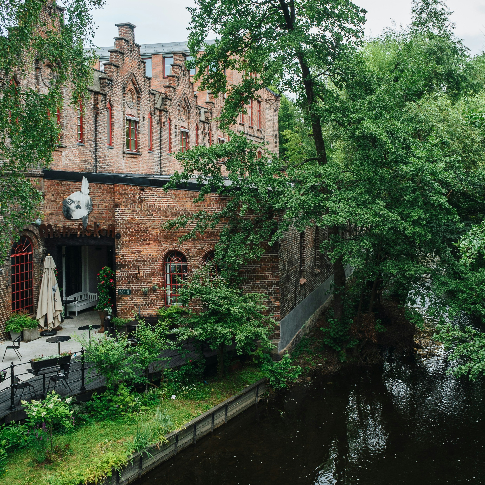
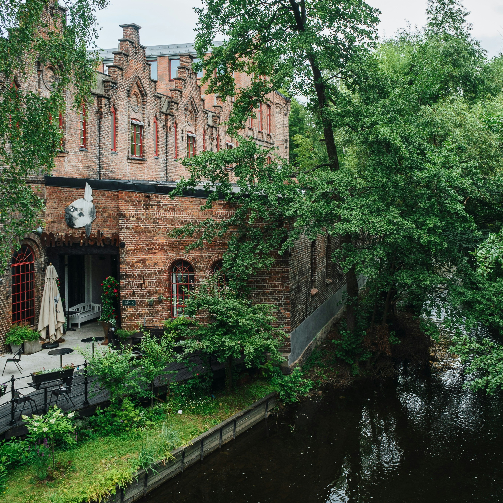

Ciudades sostenibles
Una ciudad sostenible es aquella que trata de integrar diferentes elementos orientados a la lucha contra el cambio climático siguiendo diveresos principios ecológicos.
Una ciudad sostenible es aquella que trata de integrar diferentes elementos orientados a la lucha contra el cambio climático siguiendo diveresos principios ecológicos.

Todas las ciudades sostenibles tienen unas características comunes, entre las que se encuentran contar con muchas zonas verdes (como parques y jardines), construir edificios sostenibles, apostar por la energía renovable, tener alternativas para reducir las emisiones de CO2 y la contaminación, y luchar por la convervación del agua.
 


La lista mostrada a continuación está extraída de un artículo de Repsol en el que se habla sobre el impulso del desarrollo urbano sostenible, y está basada en un estudio de 2022 realizado por la firma Arcadis.